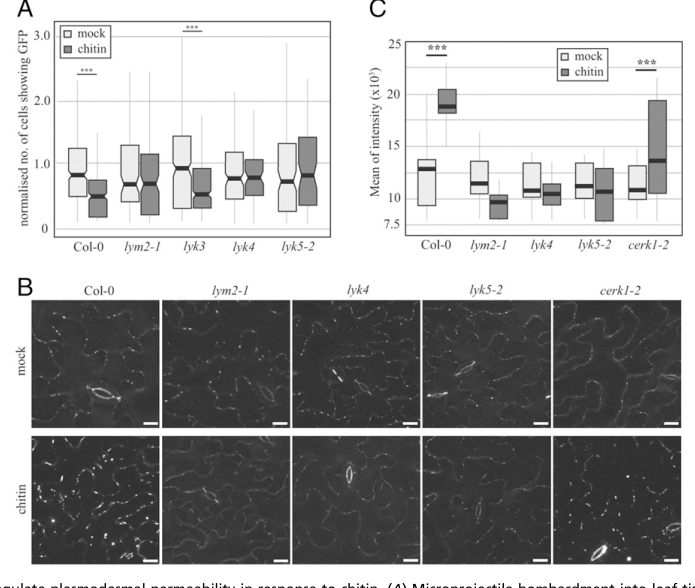

LYM2 (LysM domain-containing GPI-anchored protein 2; also called AtCEBiP) is the Arabidopsis thaliana homologue of the rice chitin elicitor-binding protein CEBiP. It is a secreted, N-glycosylated receptor-like protein with an extracellular region containing LysM domains and a C-terminal glycosylphosphatidylinositol (GPI) anchor, and it has no transmembrane or intracellular signalling domain. LYM2 binds chitin oligosaccharides with high affinity and is the major chitin-binding protein of Arabidopsis membranes, whereas its paralogues LYM1 and LYM3 bind peptidoglycan instead. Unlike rice CEBiP, LYM2 is dispensable for the canonical CERK1-dependent chitin responses (ROS burst, MAPK activation and defense-gene induction), which in Arabidopsis are initiated by the LysM receptor kinase LYK5 together with CERK1. Instead, LYM2 resides in the plasma membrane and is enriched in the plasmodesmal plasma membrane, where chitin increases its accumulation and clustering. There it mediates a CERK1-independent, chitin-specific response that closes plasmodesmata: chitin perception through LYM2, together with the LysM receptor kinases LYK4 and LYK5, the calcium-dependent kinases CPK6 and CPK11 and the NADPH oxidase RBOHD, leads to plasmodesmal callose deposition and reduced cell-to-cell molecular flux. LYM2 contributes to resistance against the fungal pathogens Botrytis cinerea and Alternaria brassicicola but not against the bacterium Pseudomonas syringae.
Definition: Any process that stops, prevents or reduces the frequency, rate or extent of the movement of substances between cells via plasmodesmata, for example by callose deposition that narrows the plasmodesmal aperture.
Justification: GO has GO:0010497 plasmodesmata-mediated intercellular transport but no regulation children. LYM2 (and FLS2, LYK4, LYK5, CPK6, CPK11, RBOHD, PDLP1/5) mediate pathogen-pattern-triggered plasmodesmal closure, a well-characterized response that currently cannot be captured precisely; LYM2 does not itself transport anything, so the parent transport term would be inappropriate.
| GO Term | Evidence | Action | Reason |
|---|---|---|---|
|
GO:0005739
mitochondrion
|
HDA
PMID:28887381 Global Analysis of Membrane-associated Protein Oligomerizati... |
REMOVE |
Summary: High-throughput assignment from a protein correlation profiling study of membrane-associated protein oligomerization. LYM2 has an N-terminal signal peptide, multiple N-glycosylation sites and a C-terminal GPI-anchor signal, and fluorescent fusions localize it to the plasma membrane and plasmodesmata.
Reason: The co-fractionation profiling method does not resolve organelle membranes cleanly, and a secretory-pathway GPI-anchored LysM protein has no route to mitochondria. Direct imaging places LYM2 at the plasma membrane with enrichment at plasmodesmata (PMID:23674687), which contradicts a mitochondrial location. This is a likely fractionation contaminant call rather than a genuine localization.
Supporting Evidence:
PMID:28887381
the apparent masses of >1350 membrane-associated proteins
PMID:23674687
In accordance with a role in the regulation of intercellular flux, LYM2 is resident at the plasma membrane and is enriched at plasmodesmata.
|
|
GO:0005886
plasma membrane
|
HDA
PMID:17644812 A high content in lipid-modified peripheral proteins and int... |
ACCEPT |
Summary: LYM2 was identified in a purified Arabidopsis plasma membrane proteome that is rich in lipid-modified (including GPI-anchored) peripheral proteins.
Reason: Consistent with the GPI anchor and with direct imaging of LYM2-mCitrine at the plasma membrane (PMID:23674687). Plasma membrane is where LYM2 perceives chitin.
Supporting Evidence:
PMID:17644812
16% of the identified proteins are predicted to be lipid-modified, specifically involving double lipid linkage through N-terminal myristoylation, S-palmitoylation, C-terminal prenylation, or glycosylphosphatidylinositol anchors
PMID:23674687
LYM2 Is a Plasma Membrane-Located Protein with PD Association.
|
|
GO:0005886
plasma membrane
|
HDA
PMID:22923678 Putative glycosyltransferases and other plant Golgi apparatu... |
ACCEPT |
Summary: LOPIT organelle proteomics assigned LYM2 to the plasma membrane cluster.
Reason: Independent high-throughput support for plasma membrane location, consistent with imaging data (PMID:23674687).
Supporting Evidence:
PMID:22923678
These include 197 Golgi apparatus proteins, 79 of which have not been localized previously by a high-confidence method, as well as the localization of 304 endoplasmic reticulum and 208 plasma membrane proteins.
|
|
GO:0005886
plasma membrane
|
IDA
PMID:12805588 Identification of glycosylphosphatidylinositol-anchored prot... |
ACCEPT |
Summary: Borner et al. identified LYM2 among phospholipase C-sensitive GPI-anchored proteins (one of the four receptor-like proteins) in Arabidopsis callus cells.
Reason: PI-PLC release demonstrates GPI anchoring at the cell surface; consistent with imaging of LYM2 at the plasma membrane (PMID:23674687).
Supporting Evidence:
PMID:12805588
Using liquid chromatography-tandem mass spectrometry, 30 GAPs were identified, including six beta-1,3 glucanases, five phytocyanins, four fasciclin-like arabinogalactan proteins, four receptor-like proteins
PMID:23674687
In accordance with a role in the regulation of intercellular flux, LYM2 is resident at the plasma membrane and is enriched at plasmodesmata.
|
|
GO:0005886
plasma membrane
|
IEA
GO_REF:0000120 |
ACCEPT |
Summary: Electronic plasma membrane annotation from ARBA/UniProt subcellular location (cell membrane, GPI-anchor).
Reason: Correct and consistent with experimental data (PMID:23674687, PMID:12805588).
Supporting Evidence:
PMID:23674687
LYM2 Is a Plasma Membrane-Located Protein with PD Association.
|
|
GO:0008061
chitin binding
|
IBA
GO_REF:0000033 |
ACCEPT |
Summary: Phylogenetic inference of chitin binding for the CEBiP/LYM2 clade of LysM receptor-like proteins; LYM2 itself is among the experimental sources.
Reason: LYM2 and rice CEBiP both bind chitin oligosaccharides with high affinity. LYM2 appearing in its own WITH/FROM reflects its own experimental grounding (PMID:22891159, PMID:22744984) and is expected, not circular. The node placement excludes LYM1/LYM3, which do not bind chitin.
Supporting Evidence:
PMID:22891159
Only one of three CEBiP homologs, AtCEBiP (LYM2), showed a high-affinity binding for chitin oligosaccharides similar to rice CEBiP.
|
|
GO:0008061
chitin binding
|
IDA
PMID:22744984 LYK4, a lysin motif receptor-like kinase, is important for c... |
ACCEPT |
Summary: Wan et al. recovered CEBiP-like1 (= LYM2, At2g17120) from Arabidopsis extracts on chitin magnetic beads, eluted with chitooctaose, repeating Petutschnig et al. 2010.
Reason: Chitin-bead affinity capture with specific oligomer elution supports chitin binding, and Shinya et al. 2012 independently showed high-affinity, specific binding of chitin oligosaccharides by LYM2 (PMID:22891159). Chitin binding is the core molecular activity of LYM2.
Supporting Evidence:
PMID:22744984
We repeated this experiment and also found that LYK1, LYK4, LYK5, and CEBiP-like1 were pulled down by chitin magnetic beads and eluted by chitooctaose
PMID:20610395
we identified the CEBiP homolog LYM2 as a potential chitin-binding protein in our affinity chromatography experiments
PMID:22891159
AtCEBiP also represented the major chitin-binding protein in the Arabidopsis membrane.
|
|
GO:0009506
plasmodesma
|
HDA
PMID:21533090 Arabidopsis plasmodesmal proteome. |
ACCEPT |
Summary: LYM2 was identified in the purified Arabidopsis plasmodesmal proteome.
Reason: Confirmed by imaging: LYM2-mCitrine is enriched at plasmodesmata and chitin increases its plasmodesmal accumulation (PMID:23674687, PMID:32284410). The plasmodesmal plasma membrane is where LYM2 executes its known function.
Supporting Evidence:
PMID:21533090
the total number of proteins identified from these samples was 1341
PMID:23674687
LYM2 is one member of a three-member protein family and was identified in protein extracts from purified PD
PMID:32284410
The mean PD index of Citrine-LYM2 was significantly higher following 30 min of chitin treatment than it was following 30 min of water treatment.
|
|
GO:0016020
membrane
|
TAS
PMID:12068095 Prediction of glycosylphosphatidylinositol-anchored proteins... |
KEEP AS NON CORE |
Summary: Bioinformatic prediction of LYM2 as a GPI-anchored protein (membrane).
Reason: Correct but uninformative; fully subsumed by the experimentally supported plasma membrane and plasmodesma annotations.
Supporting Evidence:
PMID:12068095
Glycosylphosphatidylinositol (GPI) anchoring of proteins provides a potential mechanism for targeting to the plant plasma membrane and cell wall.
|
|
GO:0016020
membrane
|
TAS
PMID:12805588 Identification of glycosylphosphatidylinositol-anchored prot... |
KEEP AS NON CORE |
Summary: Membrane location from the proteomic identification of GPI-anchored proteins.
Reason: Correct but uninformative; redundant with the IDA plasma membrane annotation from the same paper.
Supporting Evidence:
PMID:12805588
Triton X-114 phase partitioning and sensitivity to phosphatidylinositol-specific phospholipase C were used to prepare GAP-rich fractions from Arabidopsis callus cells.
|
|
GO:0071323
cellular response to chitin
|
IMP
PMID:23674687 LYM2-dependent chitin perception limits molecular flux via p... |
NEW |
Summary: lym2 mutants fail to reduce plasmodesmal molecular flux in response to chitin (but respond normally to flg22), and fail to deposit plasmodesmal callose after chitin.
Reason: LYM2 binds chitin and is the chitin-perceiving receptor component for the plasmodesmal branch of the chitin response, so it performs the ligand-recognition step rather than being a passive requirement. Comparator check: the other chitin-binding LysM receptors in Arabidopsis, LYK5 (IBA, IEP) and CERK1, carry chitin-response terms; the absence for LYM2 reflects the lack of any BP curation of Faulkner et al. 2013 and Cheval et al. 2020, not a convention. The term is chosen over defense-response terms because the evidence is a specific chitin-triggered cellular output.
Supporting Evidence:
PMID:23674687
For this response, lym2-1 mutants are insensitive to the presence of chitin, but not to the flagellin derivative flg22.
PMID:23674687
Here we have identified LYM2 as a chitin PRR that mediates a decrease in molecular flux between cells in the presence of chitin.
PMID:32284410
Our data have identified that while chitin is perceived and signals via a CERK1-dependent cascade in the PM, chitin signaling in the plasmodesmal PM occurs via a LYM2/LYK4/LYK5-dependent cascade to produce a specific, localized response.
|
Q: Should LYM2 be annotated to a defense response to fungus term? lym2 mutants are more susceptible to Botrytis cinerea and Alternaria brassicicola, but this is necessity evidence; is the plasmodesmal-closure mechanism sufficient to treat LYM2 as a participant in the defense response?
Q: Is LYM2 itself a pattern recognition receptor (GO:0038187) given that it binds chitin but has no intracellular domain and requires LYK4/LYK5 to signal, or should it be annotated only as a ligand-binding component of a receptor complex?
Q: Does LYM2 have any function in the non-plasmodesmal plasma membrane, given that it is the major chitin-binding protein of Arabidopsis membranes yet dispensable for CERK1-dependent responses?
Experiment: Measure affinity and stoichiometry of purified LYM2 ectodomain for (GlcNAc)n by ITC, and test LysM point mutants for loss of chitin binding and loss of complementation of chitin-induced plasmodesmal closure in lym2-1.
Hypothesis: LYM2 binds chitin oligomers through a CEBiP-like sandwich-type dimerization mode that promotes clustering in the plasmodesmal membrane.
Type: in vitro binding and structural analysis
Experiment: TurboID-LYM2 proximity labelling with and without chitin in leaf tissue, and genetic tests of identified callose synthases (CalS/GSL) for chitin-induced plasmodesmal callose deposition.
Hypothesis: Chitin-bound LYM2 recruits LYK4 and a defined set of signalling partners (CPKs, RBOHD, callose synthases) into a plasmodesmal signalling platform.
Type: proximity proteomics at plasmodesmata
The research report should be a detailed narrative explaining the function, biological processes, and localization of the gene product. Citations should be given for all claims.
You should prioritize authoritative reviews and primary scientific literature when conducting research. You can supplement
this with annotations you find in gene/protein databases, but these can be outdated or inaccurate.
We are specifically interested in the primary function of the gene - for enzymes, what reaction is catalyzed, and what is the substrate specificity? For transporters, what is the substrate? For structural proteins or adapters, what is the broader structural role? For signaling molecules, what is the role in the pathway.
We are interested in where in or outside the cell the gene product carries out its function.
We are also interested in the signaling or biochemical pathways in which the gene functions. We are less interested in broad pleiotropic effects, except where these elucidate the precise role.
Include evidence where possible. We are interested in both experimental evidence as well as inference from structure, evolution, or bioinformatic analysis. Precise studies should be prioritized over high-throughput, where available.
Identity verified. The target is Arabidopsis thaliana LYM2, locus At2g17120, corresponding to the user-specified UniProt accession O23006. Primary literature calls this protein AtCEBiP and identifies it as a chitin-binding, glycosylphosphatidylinositol (GPI)-anchored LysM receptor-like protein. This matches the supplied LysM-domain annotation. It is not the rice protein OsCEBiP, the Arabidopsis peptidoglycan-associated proteins LYM1 and LYM3, or the kinase CERK1. (shinya2012functionalcharacterizationof pages 1-2, buendia2018lysmreceptorlikekinase pages 9-10, shinya2012functionalcharacterizationof pages 2-3)
LYM2 is best annotated as a cell-surface receptor component for chitin-derived oligosaccharides, whose clearest demonstrated physiological output is chitin-induced restriction of molecular movement between plant cells through plasmodesmata. Its extracellular LysM-containing region recognizes the ligand; its GPI anchor positions it on the outer face of the plasma membrane. LYM2 is enriched specifically in the plasmodesmal plasma membrane, the membrane lining channels between neighboring cells. It is not itself a chitin-degrading enzyme, callose synthase, transporter, or intracellular protein kinase. (cheval2020chitinperceptionin pages 1-2, cheval2020chitinperceptionin pages 6-7, shinya2012functionalcharacterizationof pages 2-3, awwanah2026lym2mediateschitininduced pages 1-2)
In a direct binding study, membranes containing expressed Arabidopsis LYM2 bound biotinylated N-acetylchitooctaose, (GlcNAc)₈. Binding saturated at approximately 200–300 nM in that assay; this is a saturation range, not a measured dissociation constant. Unlabeled N-acetylchitooligosaccharides competed in a chain-length-dependent fashion, whereas the deacetylated chitosan octasaccharide, (GlcN)₈, did not compete under the tested conditions. LYM1 and LYM3 did not show comparable chitin binding in the same expression assay. These results establish ligand recognition, but do not establish that every chitin polymer length binds equally or identify an atomic-resolution binding site in Arabidopsis LYM2. (shinya2012functionalcharacterizationof pages 2-3, shinya2012functionalcharacterizationof pages 3-4)
The following evidence matrix separates observations from mechanistic interpretation. (cheval2020chitinperceptionin pages 2-4, cheval2020chitinperceptionin pages 6-7, shinya2012functionalcharacterizationof pages 2-3)
| Feature | Direct evidence and measurement | Interpretation or caution |
|---|---|---|
| Identity and protein class | Arabidopsis thaliana LYM2 is At2g17120/AtCEBiP (UniProt O23006), a GPI-anchored extracellular LysM receptor-like protein (shinya2012functionalcharacterizationof pages 2-3, cheval2020chitinperceptionin pages 6-7). | LYM2 lacks an intracellular kinase domain. It is a ligand-binding receptor-like protein, not a receptor kinase or enzyme; LYK4, LYK5, and CERK1 are distinct LysM receptor-like kinases. |
| Ligand and specificity | Microsomal LYM2 bound biotinylated chitooctaose, (GlcNAc)8, with saturation at approximately 200–300 nM. Unlabeled N-acetylchitooligosaccharides competed in a length-dependent manner, whereas chitosan octasaccharide, (GlcN)8, did not compete (shinya2012functionalcharacterizationof pages 2-3, shinya2012functionalcharacterizationof pages 3-4). | The results establish selective chitin-oligosaccharide binding. The 200–300 nM value is the observed saturation range, not a reported equilibrium dissociation constant (Kd). LYM1 and LYM3 did not bind chitin in the same assay. |
| Subcellular location and dynamics | LYM2 occurs in the plasma membrane and is enriched in the plasmodesmal plasma-membrane microdomain. Citrine-LYM2 enrichment at plasmodesmata increased 30 minutes after chitin treatment; at least 18 images were analyzed, with P < 0.001 (cheval2020chitinperceptionin pages 6-7). | Fluorescence anisotropy is consistent with increased LYM2 self-association or clustering at plasmodesmata, but it does not establish a defined oligomeric structure. |
| Requirement for plasmodesmal closure | After chitin treatment, wild type—but not lym2-1—restricted bombardment-delivered GFP movement into neighboring cells. The assay included at least 84 bombardment sites and six biological replicates; supported within-genotype treatment effects had P < 0.001 (cheval2020chitinperceptionin pages 2-4, cheval2020chitinperceptionin media 7458e519). | This is direct genetic evidence that LYM2 is required for the chitin-induced reduction of plasmodesmal molecular flux. |
| Callose response and CERK1 independence | At 30 minutes, plasmodesmata-associated callose increased in wild type and cerk1-2, but not in lym2-1; at least 31 images were quantified, with P < 0.001 for supported treatment comparisons (cheval2020chitinperceptionin pages 2-4, cheval2020chitinperceptionin media 7458e519). | LYM2-dependent plasmodesmal signaling is separable from canonical CERK1-dependent chitin signaling. Callose accumulation explains the reduced flux, but the responsible glucan synthase was not identified directly. |
| LYK4 and LYK5 | lyk4 and lyk5-2 mutants failed to restrict GFP movement or deposit plasmodesmal callose after chitin. LYK4, but not LYK5, was detected in purified plasmodesmal fractions. LYK5 associated with LYK4 in the general plasma membrane, and chitin altered this association and receptor mobility (cheval2020chitinperceptionin pages 2-4, cheval2020chitinperceptionin pages 6-7). | Both kinases are genetically required, but LYK5 likely acts upstream or outside the plasmodesmal microdomain. A direct plasmodesmal LYM2–LYK4–LYK5 tripartite complex has not been demonstrated. |
| Downstream RBOHD/CPK module | rbohD, cpk6-1, and cpk11-2 mutants failed to close plasmodesmata after chitin. RBOHD S133A and S343A/S347A variants failed to support closure, implicating Ser133 and Ser347; at least 89 bombardment sites were analyzed (cheval2020chitinperceptionin pages 6-7). | Genetic and phosphosite-substitution evidence supports RBOHD, CPK6, CPK11, Ser133, and Ser347. Direct phosphorylation of these sites by those CPKs within an LYM2 complex was not shown, and the downstream callose-synthase identity remains unresolved. |
| Canonical immune outputs | LYM2 knockout—and an LYM1/LYM2/LYM3 triple knockout—retained normal (GlcNAc)8-induced ROS production and defense-gene expression. LYM2 overexpression likewise did not alter ROS output or ligand sensitivity (shinya2012functionalcharacterizationof pages 2-3, shinya2012functionalcharacterizationof pages 3-4). | LYM2 is not required for the canonical whole-cell chitin outputs tested by Shinya et al. Its best-supported primary function is spatially restricted plasmodesmal signaling rather than general CERK1-dependent ROS or transcriptional signaling. |
Table: High-confidence experimental evidence defining Arabidopsis LYM2 ligand specificity, localization, and plasmodesmal immune function. The cautions distinguish direct findings from proposed receptor-complex and downstream-signaling models.
The phenotype is plasmodesmal closure, not loss of all chitin responses. In Arabidopsis leaf bombardment experiments, chitin reduced movement of GFP into neighboring cells in wild type, but not in lym2-1, lyk4, or lyk5-2 mutants. Figure 1 of the primary study documents these genotype comparisons across six biological replicates and at least 84 bombardment sites. Chitin increased plasmodesmata-associated callose, a β-1,3-glucan that restricts channel permeability, within 30 minutes in wild type and cerk1-2, but not in lym2-1, lyk4, or lyk5-2; at least 31 images were quantified, with significant within-genotype increases reported at P < 0.001. Thus, LYM2 is required for the measured chitin-dependent callose response and reduction in intercellular flux, whereas CERK1 is dispensable for that localized callose response. (cheval2020chitinperceptionin pages 2-4, cheval2020chitinperceptionin media 7458e519)
The signaling machinery is spatially differentiated. Imaging and plasmodesmal fractionation place LYM2 and the LysM receptor kinase LYK4 at plasmodesmata; LYK5 is required genetically but was not detected in purified plasmodesmal fractions. LYM2 associates with LYK4 even without chitin and in the absence of LYK5. LYK4 and LYK5 associate in the wider plasma membrane; chitin alters their proximity and mobility. Separately, chitin increases LYM2 enrichment at plasmodesmata after 30 minutes, and fluorescence anisotropy is consistent with increased LYM2 self-association there. These findings support a locally organized receptor system, not proof of a defined three-protein complex at plasmodesmata. The authors explicitly leave open whether some plasma-membrane associations involve separate two-protein complexes or a three-protein complex. (cheval2020chitinperceptionin pages 4-4, cheval2020chitinperceptionin pages 2-4, cheval2020chitinperceptionin pages 6-7, cheval2020chitinperceptionin pages 7-8)
Downstream, genetic evidence implicates calcium-dependent kinases and a localized oxidase response. Arabidopsis rbohD, cpk6-1, and cpk11-2 mutants failed to restrict plasmodesmal GFP movement after chitin. Substitution of RBOHD Ser133, or the paired Ser343/Ser347 sites, likewise disrupted closure; comparison with other substitutions implicates Ser133 and Ser347 in this response. By contrast, cpk6-1 and cpk11-2 retained a broadly measured chitin-triggered oxidative burst, emphasizing that the plasmodesmal response is separable from that whole-seedling readout. A working model is that LYM2-associated signaling engages LYK4, CPK6/CPK11, RBOHD-dependent reactive oxygen species, and local callose synthesis to close the channel. Direct phosphorylation of RBOHD by those kinases specifically within an LYM2 complex, and the identity of the callose synthase executing this particular response, were not established by these experiments. (cheval2020chitinperceptionin pages 4-6, cheval2020chitinperceptionin pages 6-7, cheval2020chitinperceptionin pages 7-8)
This resolves an apparent historical discrepancy. The earlier Arabidopsis study found that loss of LYM2—even in an LYM1/LYM2/LYM3 triple mutant—did not eliminate the tested chitin-oligosaccharide-induced bulk ROS production or defense-gene expression; increasing LYM2 abundance did not enhance the measured ROS response. Those results do not contradict its subsequently demonstrated requirement for a different, spatially restricted response. Arabidopsis CERK1 supports canonical chitin responses, whereas LYM2 is particularly important for chitin-responsive plasmodesmal permeability. The rice OsCEBiP–OsCERK1 arrangement should therefore not be assigned unchanged to Arabidopsis LYM2. (shinya2012functionalcharacterizationof pages 2-3, shinya2012functionalcharacterizationof pages 3-4, cheval2020chitinperceptionin pages 2-4)
The 2024 receptor-like-protein review lists AtLYM2/At2g17120 as a chitin-associated pattern-recognition protein, while a 2024 plasmodesmata review places callose-dependent changes in channel permeability within the broader plant-defense framework. These reviews are useful syntheses, but the precise LYM2-dependent mechanism above rests primarily on the binding and mutant/imaging experiments rather than on new LYM2 experiments in those reviews. A membrane-scaffold thesis indexed as 2023 proposes tetraspanins and flotillins as additional organizers of chitin-responsive receptor signaling; its title page says April 2022, so its indexing date should not be mistaken for the date of a peer-reviewed LYM2-specific discovery. (cai2024receptorlikeproteinsdecisionmakers pages 4-6, chen2024plasmodesmatafunctionand pages 5-6, samwald2023regulationofplasmodesmal pages 1-6)
More recently, a 13 July 2026 study found that poplar LYM2-related proteins bind chitin, localize to plasmodesmata when experimentally expressed, and are required for chitin-triggered restriction of plasmodesmal flux in Populus × canescens knockout experiments. This provides cross-species support for a conserved type of function, but the poplar paralogs PcLYM2–1/PcLYM2–2 are not Arabidopsis At2g17120, and their splice variants and knockout phenotypes must not be attributed to the Arabidopsis gene. (awwanah2026lym2mediateschitininduced pages 1-2)
Present applications are predominantly experimental: LYM2 mutants and fluorescent LYM2 fusions distinguish plasmodesmal chitin signaling from canonical whole-cell immune outputs and help investigate membrane-microdomain signaling. The observed connection to antifungal defense makes the pathway of potential interest for crop research, but the experiments reviewed here do not demonstrate that deploying or overexpressing Arabidopsis LYM2 improves field-level resistance or yield. Reports of resistance to Alternaria brassicicola appear in secondary literature; without the underlying Arabidopsis infection study available for verification here, no lesion-size or pathogen-biomass effect is assigned to LYM2. (cheval2020chitinperceptionin pages 2-4, chen2020overexpressionofan pages 1-2, awwanah2026lym2mediateschitininduced pages 1-2)
Bottom line: The experimentally supported primary annotation for Arabidopsis LYM2/At2g17120 is a GPI-anchored, extracellular LysM chitin-oligosaccharide-binding receptor component acting at plasmodesmata to trigger localized callose accumulation and limit cell-to-cell molecular flux. Its signaling role is distinct from an obligatory role in the conventional CERK1-dependent bulk chitin responses tested to date. (shinya2012functionalcharacterizationof pages 2-3, cheval2020chitinperceptionin pages 2-4, cheval2020chitinperceptionin pages 6-7, shinya2012functionalcharacterizationof pages 3-4)
References
(shinya2012functionalcharacterizationof pages 1-2): Tomonori Shinya, Noriko Motoyama, Asahi Ikeda, Miyuki Wada, Kota Kamiya, Masahiro Hayafune, Hanae Kaku, and Naoto Shibuya. Functional characterization of cebip and cerk1 homologs in arabidopsis and rice reveals the presence of different chitin receptor systems in plants. Plant & cell physiology, 53 10:1696-706, Oct 2012. URL: https://doi.org/10.1093/pcp/pcs113, doi:10.1093/pcp/pcs113. This article has 242 citations and is from a domain leading peer-reviewed journal.
(buendia2018lysmreceptorlikekinase pages 9-10): Luis Buendia, Ariane Girardin, Tongming Wang, Ludovic Cottret, and Benoit Lefebvre. Lysm receptor-like kinase and lysm receptor-like protein families: an update on phylogeny and functional characterization. Frontiers in Plant Science, Oct 2018. URL: https://doi.org/10.3389/fpls.2018.01531, doi:10.3389/fpls.2018.01531. This article has 196 citations.
(shinya2012functionalcharacterizationof pages 2-3): Tomonori Shinya, Noriko Motoyama, Asahi Ikeda, Miyuki Wada, Kota Kamiya, Masahiro Hayafune, Hanae Kaku, and Naoto Shibuya. Functional characterization of cebip and cerk1 homologs in arabidopsis and rice reveals the presence of different chitin receptor systems in plants. Plant & cell physiology, 53 10:1696-706, Oct 2012. URL: https://doi.org/10.1093/pcp/pcs113, doi:10.1093/pcp/pcs113. This article has 242 citations and is from a domain leading peer-reviewed journal.
(cheval2020chitinperceptionin pages 1-2): Cécilia Cheval, Sebastian Samwald, Matthew G. Johnston, Jeroen de Keijzer, Andrew Breakspear, Xiaokun Liu, Annalisa Bellandi, Yasuhiro Kadota, Cyril Zipfel, and Christine Faulkner. Chitin perception in plasmodesmata characterizes submembrane immune-signaling specificity in plants. Proceedings of the National Academy of Sciences of the United States of America, 117:9621-9629, Apr 2020. URL: https://doi.org/10.1073/pnas.1907799117, doi:10.1073/pnas.1907799117. This article has 112 citations and is from a highest quality peer-reviewed journal.
(cheval2020chitinperceptionin pages 6-7): Cécilia Cheval, Sebastian Samwald, Matthew G. Johnston, Jeroen de Keijzer, Andrew Breakspear, Xiaokun Liu, Annalisa Bellandi, Yasuhiro Kadota, Cyril Zipfel, and Christine Faulkner. Chitin perception in plasmodesmata characterizes submembrane immune-signaling specificity in plants. Proceedings of the National Academy of Sciences of the United States of America, 117:9621-9629, Apr 2020. URL: https://doi.org/10.1073/pnas.1907799117, doi:10.1073/pnas.1907799117. This article has 112 citations and is from a highest quality peer-reviewed journal.
(awwanah2026lym2mediateschitininduced pages 1-2): Mo Awwanah, Merle Reinhold, Greta Niemann, Mascha Muhr, Kerstin Schmitt, Oliver Valerius, Andrzej Majcherczyk, Dennis Janz, Elena Petutschnig, Volker Lipka, and Thomas Teichmann. Lym2 mediates chitin-induced plasmodesmal flux reduction in populus x canescens. Frontiers in Plant Science, Jul 2026. URL: https://doi.org/10.3389/fpls.2026.1879338, doi:10.3389/fpls.2026.1879338. This article has 0 citations.
(shinya2012functionalcharacterizationof pages 3-4): Tomonori Shinya, Noriko Motoyama, Asahi Ikeda, Miyuki Wada, Kota Kamiya, Masahiro Hayafune, Hanae Kaku, and Naoto Shibuya. Functional characterization of cebip and cerk1 homologs in arabidopsis and rice reveals the presence of different chitin receptor systems in plants. Plant & cell physiology, 53 10:1696-706, Oct 2012. URL: https://doi.org/10.1093/pcp/pcs113, doi:10.1093/pcp/pcs113. This article has 242 citations and is from a domain leading peer-reviewed journal.
(cheval2020chitinperceptionin pages 2-4): Cécilia Cheval, Sebastian Samwald, Matthew G. Johnston, Jeroen de Keijzer, Andrew Breakspear, Xiaokun Liu, Annalisa Bellandi, Yasuhiro Kadota, Cyril Zipfel, and Christine Faulkner. Chitin perception in plasmodesmata characterizes submembrane immune-signaling specificity in plants. Proceedings of the National Academy of Sciences of the United States of America, 117:9621-9629, Apr 2020. URL: https://doi.org/10.1073/pnas.1907799117, doi:10.1073/pnas.1907799117. This article has 112 citations and is from a highest quality peer-reviewed journal.
(cheval2020chitinperceptionin media 7458e519): Cécilia Cheval, Sebastian Samwald, Matthew G. Johnston, Jeroen de Keijzer, Andrew Breakspear, Xiaokun Liu, Annalisa Bellandi, Yasuhiro Kadota, Cyril Zipfel, and Christine Faulkner. Chitin perception in plasmodesmata characterizes submembrane immune-signaling specificity in plants. Proceedings of the National Academy of Sciences of the United States of America, 117:9621-9629, Apr 2020. URL: https://doi.org/10.1073/pnas.1907799117, doi:10.1073/pnas.1907799117. This article has 112 citations and is from a highest quality peer-reviewed journal.
(cheval2020chitinperceptionin pages 4-4): Cécilia Cheval, Sebastian Samwald, Matthew G. Johnston, Jeroen de Keijzer, Andrew Breakspear, Xiaokun Liu, Annalisa Bellandi, Yasuhiro Kadota, Cyril Zipfel, and Christine Faulkner. Chitin perception in plasmodesmata characterizes submembrane immune-signaling specificity in plants. Proceedings of the National Academy of Sciences of the United States of America, 117:9621-9629, Apr 2020. URL: https://doi.org/10.1073/pnas.1907799117, doi:10.1073/pnas.1907799117. This article has 112 citations and is from a highest quality peer-reviewed journal.
(cheval2020chitinperceptionin pages 7-8): Cécilia Cheval, Sebastian Samwald, Matthew G. Johnston, Jeroen de Keijzer, Andrew Breakspear, Xiaokun Liu, Annalisa Bellandi, Yasuhiro Kadota, Cyril Zipfel, and Christine Faulkner. Chitin perception in plasmodesmata characterizes submembrane immune-signaling specificity in plants. Proceedings of the National Academy of Sciences of the United States of America, 117:9621-9629, Apr 2020. URL: https://doi.org/10.1073/pnas.1907799117, doi:10.1073/pnas.1907799117. This article has 112 citations and is from a highest quality peer-reviewed journal.
(cheval2020chitinperceptionin pages 4-6): Cécilia Cheval, Sebastian Samwald, Matthew G. Johnston, Jeroen de Keijzer, Andrew Breakspear, Xiaokun Liu, Annalisa Bellandi, Yasuhiro Kadota, Cyril Zipfel, and Christine Faulkner. Chitin perception in plasmodesmata characterizes submembrane immune-signaling specificity in plants. Proceedings of the National Academy of Sciences of the United States of America, 117:9621-9629, Apr 2020. URL: https://doi.org/10.1073/pnas.1907799117, doi:10.1073/pnas.1907799117. This article has 112 citations and is from a highest quality peer-reviewed journal.
(cai2024receptorlikeproteinsdecisionmakers pages 4-6): Minrui Cai, Hongqiang Yu, E. Sun, and Cunwu Zuo. Receptor-like proteins: decision-makers of plant immunity. Phytopathology Research, Nov 2024. URL: https://doi.org/10.1186/s42483-024-00279-0, doi:10.1186/s42483-024-00279-0. This article has 24 citations and is from a peer-reviewed journal.
(chen2024plasmodesmatafunctionand pages 5-6): Jingsheng Chen, Xiaofeng Xu, Wei Liu, Ziyang Feng, Quan Chen, You Zhou, Miao Sun, Liping Gan, Tiange Zhou, and Yuanhu Xuan. Plasmodesmata function and callose deposition in plant disease defense. Aug 2024. URL: https://doi.org/10.3390/plants13162242, doi:10.3390/plants13162242. This article has 27 citations.
(samwald2023regulationofplasmodesmal pages 1-6): S Samwald. Regulation of plasmodesmal receptor sorting and signalling by membrane scaffolds–the role of tetraspanins and flotillins. Unknown journal, 2023.
(chen2020overexpressionofan pages 1-2): Qiming Chen, Chaohua Dong, Xiaohong Sun, Yugang Zhang, Hongyi Dai, and Suhua Bai. Overexpression of an apple lysm-containing protein gene, mdcerk1–2, confers improved resistance to the pathogenic fungus, alternaria alternata, in nicotiana benthamiana. BMC Plant Biology, Apr 2020. URL: https://doi.org/10.1186/s12870-020-02361-z, doi:10.1186/s12870-020-02361-z. This article has 47 citations and is from a peer-reviewed journal.
(chen2024plasmodesmatafunctionand pages 4-5): Jingsheng Chen, Xiaofeng Xu, Wei Liu, Ziyang Feng, Quan Chen, You Zhou, Miao Sun, Liping Gan, Tiange Zhou, and Yuanhu Xuan. Plasmodesmata function and callose deposition in plant disease defense. Aug 2024. URL: https://doi.org/10.3390/plants13162242, doi:10.3390/plants13162242. This article has 27 citations.

LYM2-deep-research-falcon.md; consistent with primary papers.cellular response to chitin (IBA, IEP) and innate immune response (IMP).id: O23006
gene_symbol: LYM2
product_type: PROTEIN
status: COMPLETE
taxon:
id: NCBITaxon:3702
label: Arabidopsis thaliana
description: >-
LYM2 (LysM domain-containing GPI-anchored protein 2; also called AtCEBiP) is the
Arabidopsis thaliana homologue of the rice chitin elicitor-binding protein CEBiP. It is a
secreted, N-glycosylated receptor-like protein with an extracellular region containing
LysM domains and a C-terminal glycosylphosphatidylinositol (GPI) anchor, and it has no
transmembrane or intracellular signalling domain. LYM2 binds chitin oligosaccharides with
high affinity and is the major chitin-binding protein of Arabidopsis membranes, whereas its
paralogues LYM1 and LYM3 bind peptidoglycan instead. Unlike rice CEBiP, LYM2 is dispensable
for the canonical CERK1-dependent chitin responses (ROS burst, MAPK activation and
defense-gene induction), which in Arabidopsis are initiated by the LysM receptor kinase LYK5
together with CERK1. Instead, LYM2 resides in the plasma membrane and is enriched in the
plasmodesmal plasma membrane, where chitin increases its accumulation and clustering. There
it mediates a CERK1-independent, chitin-specific response that closes plasmodesmata: chitin
perception through LYM2, together with the LysM receptor kinases LYK4 and LYK5, the
calcium-dependent kinases CPK6 and CPK11 and the NADPH oxidase RBOHD, leads to
plasmodesmal callose deposition and reduced cell-to-cell molecular flux. LYM2 contributes
to resistance against the fungal pathogens Botrytis cinerea and Alternaria brassicicola
but not against the bacterium Pseudomonas syringae.
existing_annotations:
- term:
id: GO:0005739
label: mitochondrion
evidence_type: HDA
original_reference_id: PMID:28887381
qualifier: located_in
review:
summary: >-
High-throughput assignment from a protein correlation profiling study of
membrane-associated protein oligomerization. LYM2 has an N-terminal signal peptide,
multiple N-glycosylation sites and a C-terminal GPI-anchor signal, and fluorescent
fusions localize it to the plasma membrane and plasmodesmata.
action: REMOVE
reason: >-
The co-fractionation profiling method does not resolve organelle membranes cleanly, and
a secretory-pathway GPI-anchored LysM protein has no route to mitochondria. Direct
imaging places LYM2 at the plasma membrane with enrichment at plasmodesmata
(PMID:23674687), which contradicts a mitochondrial location. This is a likely
fractionation contaminant call rather than a genuine localization.
supported_by:
- reference_id: PMID:28887381
supporting_text: the apparent masses of >1350 membrane-associated proteins
- reference_id: PMID:23674687
supporting_text: In accordance with a role in the regulation of intercellular flux,
LYM2 is resident at the plasma membrane and is enriched at plasmodesmata.
- term:
id: GO:0005886
label: plasma membrane
evidence_type: HDA
original_reference_id: PMID:17644812
qualifier: located_in
review:
summary: >-
LYM2 was identified in a purified Arabidopsis plasma membrane proteome that is rich in
lipid-modified (including GPI-anchored) peripheral proteins.
action: ACCEPT
reason: >-
Consistent with the GPI anchor and with direct imaging of LYM2-mCitrine at the plasma
membrane (PMID:23674687). Plasma membrane is where LYM2 perceives chitin.
supported_by:
- reference_id: PMID:17644812
supporting_text: 16% of the identified proteins are predicted to be lipid-modified,
specifically involving double lipid linkage through N-terminal myristoylation,
S-palmitoylation, C-terminal prenylation, or glycosylphosphatidylinositol anchors
- reference_id: PMID:23674687
supporting_text: LYM2 Is a Plasma Membrane-Located Protein with PD Association.
- term:
id: GO:0005886
label: plasma membrane
evidence_type: HDA
original_reference_id: PMID:22923678
qualifier: located_in
review:
summary: >-
LOPIT organelle proteomics assigned LYM2 to the plasma membrane cluster.
action: ACCEPT
reason: >-
Independent high-throughput support for plasma membrane location, consistent with
imaging data (PMID:23674687).
supported_by:
- reference_id: PMID:22923678
supporting_text: These include 197 Golgi apparatus proteins, 79 of which have not been
localized previously by a high-confidence method, as well as the localization of
304 endoplasmic reticulum and 208 plasma membrane proteins.
- term:
id: GO:0005886
label: plasma membrane
evidence_type: IDA
original_reference_id: PMID:12805588
qualifier: located_in
review:
summary: >-
Borner et al. identified LYM2 among phospholipase C-sensitive GPI-anchored proteins
(one of the four receptor-like proteins) in Arabidopsis callus cells.
action: ACCEPT
reason: >-
PI-PLC release demonstrates GPI anchoring at the cell surface; consistent with
imaging of LYM2 at the plasma membrane (PMID:23674687).
supported_by:
- reference_id: PMID:12805588
supporting_text: Using liquid chromatography-tandem mass spectrometry, 30 GAPs were
identified, including six beta-1,3 glucanases, five phytocyanins, four
fasciclin-like arabinogalactan proteins, four receptor-like proteins
- reference_id: PMID:23674687
supporting_text: In accordance with a role in the regulation of intercellular flux,
LYM2 is resident at the plasma membrane and is enriched at plasmodesmata.
- term:
id: GO:0005886
label: plasma membrane
evidence_type: IEA
original_reference_id: GO_REF:0000120
qualifier: located_in
review:
summary: >-
Electronic plasma membrane annotation from ARBA/UniProt subcellular location
(cell membrane, GPI-anchor).
action: ACCEPT
reason: >-
Correct and consistent with experimental data (PMID:23674687, PMID:12805588).
supported_by:
- reference_id: PMID:23674687
supporting_text: LYM2 Is a Plasma Membrane-Located Protein with PD Association.
- term:
id: GO:0008061
label: chitin binding
evidence_type: IBA
original_reference_id: GO_REF:0000033
qualifier: enables
supporting_entities:
- AGI_LocusCode:AT2G17120
- PANTHER:PTN002136382
review:
summary: >-
Phylogenetic inference of chitin binding for the CEBiP/LYM2 clade of LysM
receptor-like proteins; LYM2 itself is among the experimental sources.
action: ACCEPT
reason: >-
LYM2 and rice CEBiP both bind chitin oligosaccharides with high affinity. LYM2
appearing in its own WITH/FROM reflects its own experimental grounding (PMID:22891159,
PMID:22744984) and is expected, not circular. The node placement excludes LYM1/LYM3,
which do not bind chitin.
supported_by:
- reference_id: PMID:22891159
supporting_text: Only one of three CEBiP homologs, AtCEBiP (LYM2), showed a
high-affinity binding for chitin oligosaccharides similar to rice CEBiP.
- term:
id: GO:0008061
label: chitin binding
evidence_type: IDA
original_reference_id: PMID:22744984
qualifier: enables
review:
summary: >-
Wan et al. recovered CEBiP-like1 (= LYM2, At2g17120) from Arabidopsis extracts on
chitin magnetic beads, eluted with chitooctaose, repeating Petutschnig et al. 2010.
action: ACCEPT
reason: >-
Chitin-bead affinity capture with specific oligomer elution supports chitin binding,
and Shinya et al. 2012 independently showed high-affinity, specific binding of chitin
oligosaccharides by LYM2 (PMID:22891159). Chitin binding is the core molecular activity
of LYM2.
additional_reference_ids:
- PMID:22891159
- PMID:20610395
supported_by:
- reference_id: PMID:22744984
supporting_text: We repeated this experiment and also found that LYK1, LYK4, LYK5, and
CEBiP-like1 were pulled down by chitin magnetic beads and eluted by chitooctaose
- reference_id: PMID:20610395
supporting_text: we identified the CEBiP homolog LYM2 as a potential chitin-binding
protein in our affinity chromatography experiments
- reference_id: PMID:22891159
supporting_text: AtCEBiP also represented the major chitin-binding protein in the
Arabidopsis membrane.
- term:
id: GO:0009506
label: plasmodesma
evidence_type: HDA
original_reference_id: PMID:21533090
qualifier: located_in
review:
summary: >-
LYM2 was identified in the purified Arabidopsis plasmodesmal proteome.
action: ACCEPT
reason: >-
Confirmed by imaging: LYM2-mCitrine is enriched at plasmodesmata and chitin increases
its plasmodesmal accumulation (PMID:23674687, PMID:32284410). The plasmodesmal plasma
membrane is where LYM2 executes its known function.
additional_reference_ids:
- PMID:23674687
- PMID:32284410
supported_by:
- reference_id: PMID:21533090
supporting_text: the total number of proteins identified from these samples was 1341
- reference_id: PMID:23674687
supporting_text: LYM2 is one member of a three-member protein family and was identified
in protein extracts from purified PD
- reference_id: PMID:32284410
supporting_text: The mean PD index of Citrine-LYM2 was significantly higher following
30 min of chitin treatment than it was following 30 min of water treatment.
- term:
id: GO:0016020
label: membrane
evidence_type: TAS
original_reference_id: PMID:12068095
qualifier: located_in
review:
summary: >-
Bioinformatic prediction of LYM2 as a GPI-anchored protein (membrane).
action: KEEP_AS_NON_CORE
reason: >-
Correct but uninformative; fully subsumed by the experimentally supported plasma
membrane and plasmodesma annotations.
supported_by:
- reference_id: PMID:12068095
supporting_text: Glycosylphosphatidylinositol (GPI) anchoring of proteins provides a
potential mechanism for targeting to the plant plasma membrane and cell wall.
- term:
id: GO:0016020
label: membrane
evidence_type: TAS
original_reference_id: PMID:12805588
qualifier: located_in
review:
summary: >-
Membrane location from the proteomic identification of GPI-anchored proteins.
action: KEEP_AS_NON_CORE
reason: >-
Correct but uninformative; redundant with the IDA plasma membrane annotation from the
same paper.
supported_by:
- reference_id: PMID:12805588
supporting_text: Triton X-114 phase partitioning and sensitivity to
phosphatidylinositol-specific phospholipase C were used to prepare GAP-rich
fractions from Arabidopsis callus cells.
- term:
id: GO:0071323
label: cellular response to chitin
evidence_type: IMP
original_reference_id: PMID:23674687
review:
summary: >-
lym2 mutants fail to reduce plasmodesmal molecular flux in response to chitin (but
respond normally to flg22), and fail to deposit plasmodesmal callose after chitin.
action: NEW
reason: >-
LYM2 binds chitin and is the chitin-perceiving receptor component for the
plasmodesmal branch of the chitin response, so it performs the ligand-recognition
step rather than being a passive requirement. Comparator check: the other chitin-binding
LysM receptors in Arabidopsis, LYK5 (IBA, IEP) and CERK1, carry chitin-response terms;
the absence for LYM2 reflects the lack of any BP curation of Faulkner et al. 2013 and
Cheval et al. 2020, not a convention. The term is chosen over defense-response terms
because the evidence is a specific chitin-triggered cellular output.
additional_reference_ids:
- PMID:32284410
supported_by:
- reference_id: PMID:23674687
supporting_text: For this response, lym2-1 mutants are insensitive to the presence of
chitin, but not to the flagellin derivative flg22.
- reference_id: PMID:23674687
supporting_text: Here we have identified LYM2 as a chitin PRR that mediates a decrease
in molecular flux between cells in the presence of chitin.
- reference_id: PMID:32284410
supporting_text: Our data have identified that while chitin is perceived and signals
via a CERK1-dependent cascade in the PM, chitin signaling in the plasmodesmal PM
occurs via a LYM2/LYK4/LYK5-dependent cascade to produce a specific, localized
response.
core_functions:
- description: >-
Extracellular, GPI-anchored LysM receptor-like protein that binds chitin
oligosaccharides in the plasmodesmal plasma membrane and, with the LysM receptor kinases
LYK4 and LYK5, initiates a CERK1-independent signalling cascade (CPK6/CPK11, RBOHD,
callose deposition) that closes plasmodesmata and limits cell-to-cell molecular flux in
response to fungal chitin.
molecular_function:
id: GO:0008061
label: chitin binding
directly_involved_in:
- id: GO:0071323
label: cellular response to chitin
locations:
- id: GO:0009506
label: plasmodesma
- id: GO:0005886
label: plasma membrane
supported_by:
- reference_id: PMID:22891159
supporting_text: Only one of three CEBiP homologs, AtCEBiP (LYM2), showed a
high-affinity binding for chitin oligosaccharides similar to rice CEBiP.
- reference_id: PMID:23674687
supporting_text: We show that LYSIN MOTIF DOMAIN-CONTAINING GLYCOSYLPHOSPHATIDYLINOSITOL-ANCHORED
PROTEIN 2 (LYM2), the Arabidopsis homolog of a rice chitin receptor-like protein,
mediates a reduction in molecular flux via plasmodesmata in the presence of chitin.
- reference_id: PMID:32284410
supporting_text: Focusing on chitin signaling, we found that responses in the
plasmodesmal PM require the LysM receptor kinases LYK4 and LYK5 in addition to LYM2.
- reference_id: file:ARATH/LYM2/LYM2-deep-research-falcon.md
supporting_text: LYM2 is required for the measured chitin-dependent callose response
and reduction in intercellular flux, whereas CERK1 is dispensable for that localized
callose response.
proposed_new_terms:
- proposed_name: negative regulation of plasmodesmata-mediated intercellular transport
proposed_definition: >-
Any process that stops, prevents or reduces the frequency, rate or extent of the
movement of substances between cells via plasmodesmata, for example by callose
deposition that narrows the plasmodesmal aperture.
justification: >-
GO has GO:0010497 plasmodesmata-mediated intercellular transport but no regulation
children. LYM2 (and FLS2, LYK4, LYK5, CPK6, CPK11, RBOHD, PDLP1/5) mediate
pathogen-pattern-triggered plasmodesmal closure, a well-characterized response that
currently cannot be captured precisely; LYM2 does not itself transport anything, so the
parent transport term would be inappropriate.
suggested_questions:
- question: >-
Should LYM2 be annotated to a defense response to fungus term? lym2 mutants are more
susceptible to Botrytis cinerea and Alternaria brassicicola, but this is necessity
evidence; is the plasmodesmal-closure mechanism sufficient to treat LYM2 as a
participant in the defense response?
- question: >-
Is LYM2 itself a pattern recognition receptor (GO:0038187) given that it binds chitin
but has no intracellular domain and requires LYK4/LYK5 to signal, or should it be
annotated only as a ligand-binding component of a receptor complex?
- question: >-
Does LYM2 have any function in the non-plasmodesmal plasma membrane, given that it is
the major chitin-binding protein of Arabidopsis membranes yet dispensable for
CERK1-dependent responses?
suggested_experiments:
- experiment_type: in vitro binding and structural analysis
hypothesis: LYM2 binds chitin oligomers through a CEBiP-like sandwich-type dimerization
mode that promotes clustering in the plasmodesmal membrane.
description: Measure affinity and stoichiometry of purified LYM2 ectodomain for (GlcNAc)n
by ITC, and test LysM point mutants for loss of chitin binding and loss of complementation
of chitin-induced plasmodesmal closure in lym2-1.
- experiment_type: proximity proteomics at plasmodesmata
hypothesis: Chitin-bound LYM2 recruits LYK4 and a defined set of signalling partners
(CPKs, RBOHD, callose synthases) into a plasmodesmal signalling platform.
description: TurboID-LYM2 proximity labelling with and without chitin in leaf tissue, and
genetic tests of identified callose synthases (CalS/GSL) for chitin-induced plasmodesmal
callose deposition.
references:
- id: file:ARATH/LYM2/LYM2-deep-research-falcon.md
title: Falcon (Edison Scientific) deep research report for LYM2
findings: []
- id: GO_REF:0000033
title: Annotation inferences using phylogenetic trees
findings: []
- id: GO_REF:0000120
title: Combined Automated Annotation using Multiple IEA Methods
findings: []
- id: PMID:12068095
title: Prediction of glycosylphosphatidylinositol-anchored proteins in Arabidopsis.
A genomic analysis.
findings: []
- id: PMID:12805588
title: Identification of glycosylphosphatidylinositol-anchored proteins in Arabidopsis.
A proteomic and genomic analysis.
findings: []
- id: PMID:17644812
title: A high content in lipid-modified peripheral proteins and integral receptor
kinases features in the arabidopsis plasma membrane proteome.
findings: []
- id: PMID:21533090
title: Arabidopsis plasmodesmal proteome.
findings: []
- id: PMID:22744984
title: LYK4, a lysin motif receptor-like kinase, is important for chitin signaling
and plant innate immunity in Arabidopsis.
findings: []
- id: PMID:22923678
title: Putative glycosyltransferases and other plant Golgi apparatus proteins are
revealed by LOPIT proteomics.
findings: []
- id: PMID:28887381
title: Global Analysis of Membrane-associated Protein Oligomerization Using Protein
Correlation Profiling.
findings: []
- id: PMID:22891159
title: Functional characterization of CEBiP and CERK1 homologs in arabidopsis and rice reveals the presence of different chitin receptor systems in plants.
findings: []
- id: PMID:23674687
title: LYM2-dependent chitin perception limits molecular flux via plasmodesmata.
findings: []
- id: PMID:32284410
title: Chitin perception in plasmodesmata characterizes submembrane immune-signaling specificity in plants.
findings: []
- id: PMID:23803749
title: Presence of LYM2 dependent but CERK1 independent disease resistance in Arabidopsis.
findings: []
- id: PMID:20610395
title: The lysin motif receptor-like kinase (LysM-RLK) CERK1 is a major chitin-binding protein in Arabidopsis thaliana and subject to chitin-induced phosphorylation.
findings: []
- id: PMID:42516602
title: LYM2 mediates chitin-induced plasmodesmal flux reduction in Populus x canescens.
findings: []